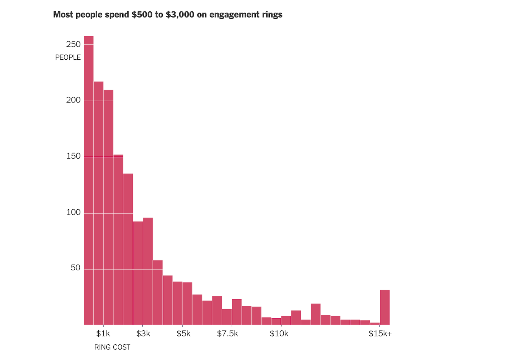

Portfolio overview
From raw data to decision-relevant visual evidence
This portfolio brings together work in comparative visualisation, data extraction, dashboards, spatial analysis, large datasets and interactive charts. The emphasis is on making complex information easier to interpret and communicate.
01
Evidence
Transform public datasets into clear, structured visual outputs.
02
Methods
Vega-Lite, Python/Colab, scraping, dashboards and interactive visualisation.
03
Application
Economic, policy, sustainability, tourism and spatial-analysis questions.
CC1
Foundational Data Visualisation
Early exercises focused on translating structured data into clear visual outputs.
Chart 2
CC2
Comparative Visualisation
Further work developing chart selection and comparative presentation techniques.
Chart 3
Chart 4
CC3
Energy Trends and Economic Context
Charts developed around themes discussed in the Festival of Economics.
Renewable energy
The figure demonstrates a positive trend in the use of renewables in the UK despite a sharp decline in 2020.
Electricity production
Although the long-run trend in electricity production was positive, output began to decline after 2010, potentially reflecting shifts towards renewables.
CC4
Replication, Recreation and Improvement
Reproducing an existing chart and then improving its visual presentation.
New York Times engagement-ring chart
The original bar chart illustrates how much Americans spend on engagement rings.

Replicated version
Improved version
The improved version revises the colour treatment and the presentation of the x- and y-axis metrics.
CC5
Web Scraping and Tourism Data
Implementing a data scraper to analyse international tourist arrivals across the Americas.
Tourism was selected as the analytical topic, with the Americas compared using international tourist arrivals. View Colab notebook.
CC6
Programmatic Dashboard
A multi-chart dashboard generated from ONS data using loops. View Colab notebook.
CC7
Spatial Analysis and Choropleths
The first map presents Istanbul and its districts; the second visualises population across districts.
CC8
Big Data: Extracting a Story from Millions of Prices
Filtering and aggregating a large price dataset to identify interpretable trends in British chicken-product prices.
Monthly price trends for different chicken products in Britain. Data by Davies and McEvoy (2014) were filtered to chicken products and aggregated by month to calculate average prices. View Colab notebook.
Initial prices of different chicken products, filtered using cpi_name.
View Colab notebook.
CC9
Analytical Charts
Exercises focused on using visual structure to support analytical interpretation.
CC10
Interactive Visualisation
Interactive charts designed to let the user explore the underlying information directly.
Final project
Open Project
Conflict Legacy: Impact of the Yugoslav Wars on Post-Conflict Development
A comparative data-visualisation project examining economic, institutional and social development outcomes across former Yugoslav republics.